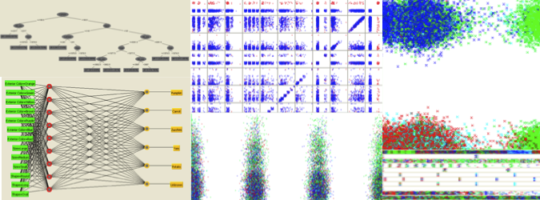

WEKA: Data Mining Software in Java(){
Software Livre
Uma das formas de medir a inteligência de uma entidade (uma máquina, no contexto da Computação) é avaliar sua capacidade de reconhecer padrões e fazer associações/classificações tal qual, ou pelo menos semelhante, ao que o cérebro humano realiza de forma eficaz e rotineira.
É basicamente disso que o subcampo Mineração de Dados (Data Mining) trata: encontrar informações relevantes, de forma automatizada, em um conjunto de dados sem uma estruturação adequada, e transformar essas informações para algo inteligível aos humanos. Com isso, percebemos que não é uma tarefa trivial criar uma máquina capaz de entender as necessidades de uma pessoa; assimilar as peculiaridades do problema em questão; e encontrar o que realmente importa em uma imensidão de informações bagunçadas. Assim, essa área tem sido de grande interesse para empresas e acadêmicos, e softwares que fornecem tais serviços tem sido muito usados e visados.
WEKA logo
Como você deve ter imaginado, existem também softwares livres nesse contexto; um deles é o WEKA, licenciado de acordo com a "GNU General Public License". O software começou a ser desenvolvido em 1997, na Universidade de Waikato, Nova Zelândia. Sua versão estável mais recente é de 2014, e foi completamente implementado em Java. Devido à sua idade, eficiência, e acessibilidade, o WEKA é considerado uma ferramenta clássica para Data Mining e muito utilizado com o objetivo educacional.
De acordo com seus criadores, o WEKA "é uma coleção de algoritmos de Aprendizagem de Máquina para tarefas de Mineração de Dados". Ele possui uma interface gráfica de fácil utilização, a qual permite a utilização desses seus serviços de forma interativa. No entanto, seus algoritmos podem também ser invocados de dentro do código do usuário, ou chamados pela linha de comando. Há também a possibilidade de estender as funcionalidades já existentes do software, ajudando assim na criação de novas técnicas de aprendizagem de máquina.

gráficos gerados pelo software
Assim, o WEKA é uma ferramenta embutida de inteligência artificial; capaz de complementar nossa própria inteligência, e nos ajudar em problemas que nossa mente não consegue lidar de forma eficiente. Não obstante, WEKA é, antes de tudo isso, um software que preza por nossa liberdade.
PS: Uma curiosidade adicional, o WEKA pode também ser usado para tratar problemas da área de Big Data, embora nesse contexto o uso da interface gráfica não seja válido. Para quem quiser aprender um pouco mais sobre Big Data, veja a edição passada da Printf.
Referências:
}